Figure gallery
Every figure in this documentation is generated by the package itself, with CairoMakie. Each plot_* function returns a Figure you can restyle, compose, or save with savefig.
xpuFP.savefig — Function
savefig(fig, path; px_per_unit=2) -> StringSave a figure, creating the directory if needed. Returns the path. PNG gets a 2× pixel density by default so figures stay crisp in the docs.
xpuFP.xpufp_theme — Function
xpufp_theme() -> ThemeThe package's Makie theme: restrained, print-oriented, with a light background and thin rules. Applied automatically by every plot_* function; call set_theme!(xpufp_theme()) to use it for your own figures too.
xpuFP.format_color — Function
format_color(f) -> RGBfThe stable colour for a format, falling back to grey for anything unregistered.
Formats
plot_bit_layout(FP32; value = -6.375)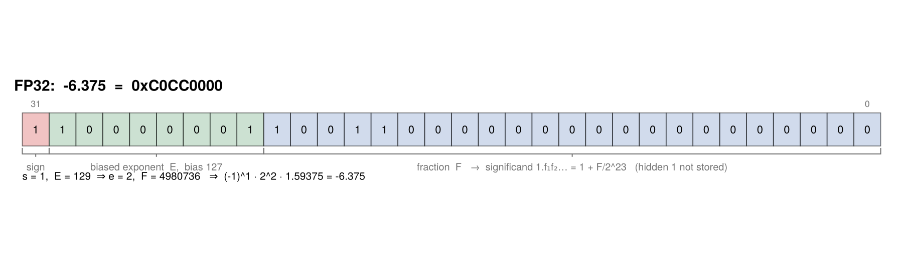
plot_format_zoo()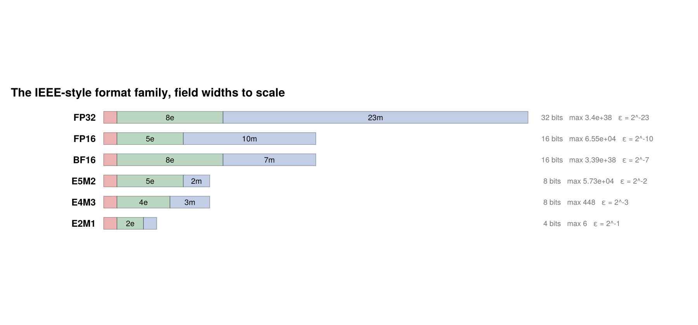
plot_fp4_codes()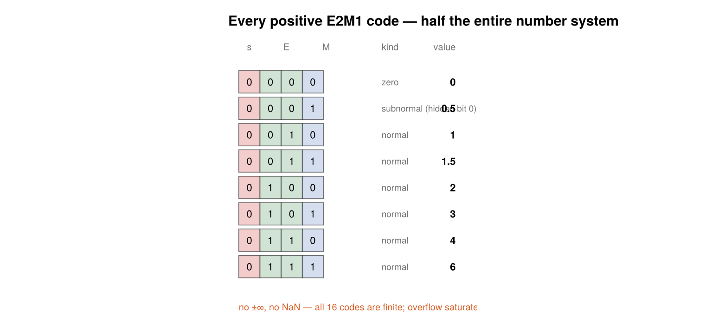
plot_number_line(E2M1)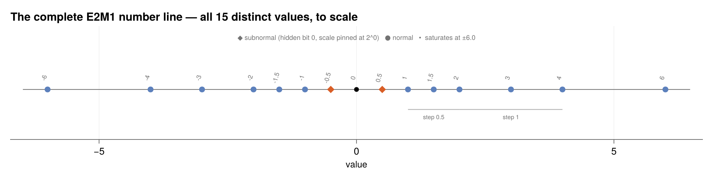
plot_binade_spacing(FP32)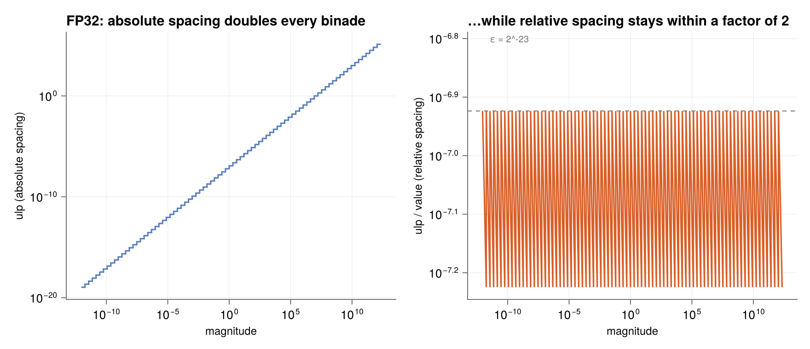
plot_log_axis_analogy(E4M3)
plot_edges_map(FP32)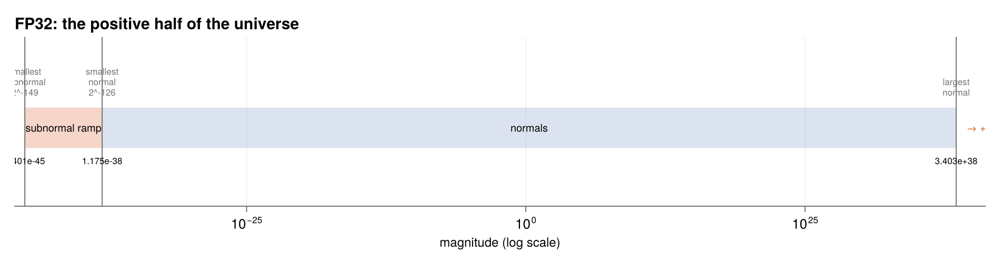
xpuFP.plot_bit_layout — Function
plot_bit_layout(f::FloatFormat; value=nothing, size=(900,260)) -> FigureDraw a format's bit layout, every field coloured and braced. With value supplied, the cells carry that value's actual bits and the caption decodes it.
Each field is read with ordinary binary place value: the exponent bits form a plain unsigned integer, and the fraction bits continue binary place value past the point, so together with the hidden leading 1 they form 1.f₁f₂….
fig = plot_bit_layout(FP32; value = -6.375) # the report's 0xC0CC0000
savefig(fig, "fp32_layout.png")plot_bit_layout(f::FixedFormat; value=nothing, size=(900,260)) -> FigureThe fixed-point counterpart: sign, integer and fraction cells, each with its power-of-two weight, and the binary point that never moves.
The whole character of the format is visible as geometry — the weights step down uniformly through the point, which is why the spacing is constant everywhere and the relative error explodes for small values.
plot_bit_layout(f::IntFormat; value=nothing, size=(900,240)) -> FigureThe two's-complement integer layout: every cell an ordinary power of two, except the top one, which carries the negative weight −2^(b−1) that makes the encoding signed with no correction step anywhere.
xpuFP.plot_format_zoo — Function
plot_format_zoo(; formats=(FP32,FP16,BF16,E5M2,E4M3,E2M1), size=(900,420)) -> FigureThe IEEE-style family side by side with field widths drawn to scale, so the trade-offs are visible as geometry.
The headline comparison: bfloat16 is simply FP32 with the bottom 16 fraction bits chopped off — same exponent, same range, far less precision.
xpuFP.plot_fp4_codes — Function
plot_fp4_codes(f::FloatFormat = E2M1; size=(760,360)) -> FigureEvery code of a 4-bit format, laid out as a table: bit pattern, fields, and the value it decodes to.
For E2M1 this is half the entire number system — setting the sign bit mirrors each row. The reserved-exponent machinery of FP32 shrinks to a single rule (E = 0 drops the hidden bit) and the special values vanish entirely: the top code is an ordinary number, 6, and results beyond it clamp rather than overflowing to infinity.
xpuFP.plot_number_line — Function
plot_number_line(f::FloatFormat = E2M1; size=(950,240)) -> FigureThe entire number line of a narrow format, drawn to scale — no schematic needed.
For E2M1 all fifteen distinct values fit on one axis: spacing doubles at each power of two exactly as in FP32, the subnormal ±0.5 extends the innermost step uniformly to zero (gradual underflow in miniature), and the line simply stops at ±6, where arithmetic saturates instead of producing ±∞.
xpuFP.plot_binade_spacing — Function
plot_binade_spacing(f::FloatFormat = FP32; size=(880,380)) -> FigureThe defining property of floating point, plotted: absolute spacing (ulp) against magnitude on log–log axes is a staircase that doubles at every power of two, while relative spacing stays bounded — within a factor of 2, forever.
That factor of 2 is not slack in the plot; it is real. Relative spacing is a sawtooth between $2^{-mbits}$ and $2^{-mbits-1}$, flat only by comparison with an absolute staircase spanning eighty octaves. plot_log_axis_analogy is the same quantity drawn over six binades instead of all of them, where the wobble is the point.
Within one binade [2ᵉ, 2ᵉ⁺¹) there are exactly 2^mbits equally spaced values, so the gap between neighbours is 2^(e−mbits). Around 1.0 the FP32 spacing is ε ≈ 1.2e-7; around 2²⁴ it reaches 2, so FP32 cannot even represent the odd integer 16 777 217.
xpuFP.plot_edges_map — Function
plot_edges_map(f::FloatFormat = FP32; size=(950,250)) -> FigureThe positive half of a format's universe on a logarithmic axis: the subnormal ramp, the normal range, and the overflow cliff.
Zero itself sits off the logarithmic axis, which is exactly the point — the subnormals exist to bridge that gap in even steps.
xpuFP.plot_seams — Function
plot_seams(f::FloatFormat = FP32; size=(940,380)) -> FigureBoth boundaries under a microscope, on linear axes so the grid geometry is honest.
Top seam: the open circle is the phantom grid point 2^(emax+1) — exactly one ulp above x_max, but its encoding needs the reserved exponent, so the slot is occupied by +∞, one increment of the bit pattern away. The dashed line is the round-to-nearest overflow threshold, the midpoint of that final gap.
Bottom seam: unlike the top, the spacing here is identical on both sides — pinning the subnormal scale makes the last subnormal and the first normal exactly one subnormal step apart. The ladder crosses without a seam you could feel.
Error behaviour
plot_relative_error(E2M1)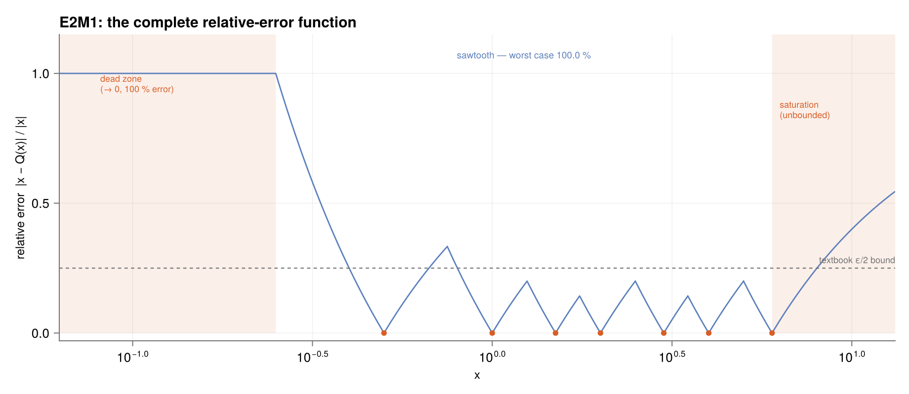
plot_stagnation()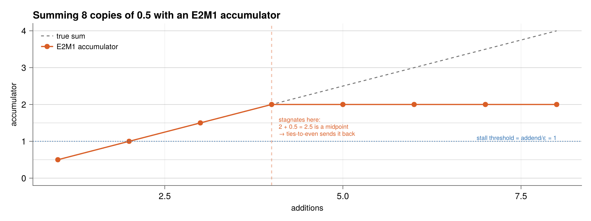
plot_fp4_error_regimes()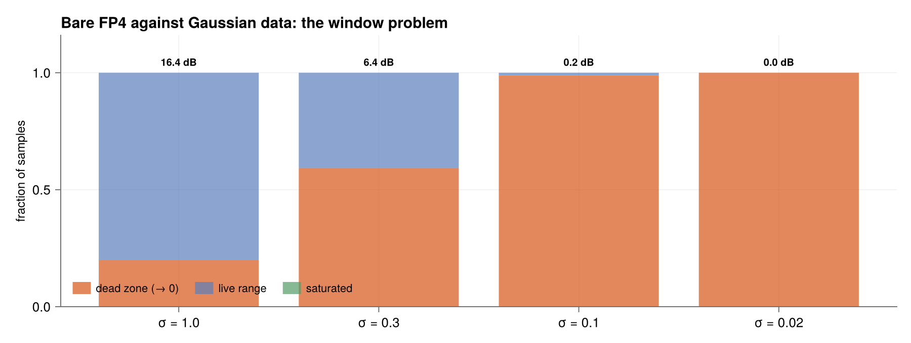
plot_verdict_curve()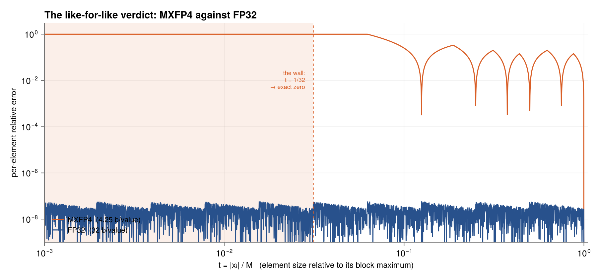
xpuFP.plot_relative_error — Function
plot_relative_error(f::FloatFormat = E2M1; xmax=nothing, npts=6000, size=(920,400)) -> FigureThe complete relative-error function of a format, computed pointwise from the rounding rule, saturation included.
For E2M1 it has three regimes, each a quantified failure mode:
- The dead zone — every
|x| < 0.25rounds to 0: a 100% relative error. The format cannot distinguish small from zero. - The sawtooth — on
[0.25, 6]the error oscillates between 0 (on grid points) and peaks at the midpoints. The familiarε/2 = 25%bound holds only on[1,6]; the true worst case is 33%, atx = 0.75in the wide subnormal-adjacent gap. - Saturation — beyond 6 the error grows without bound.
The dashed line marks the textbook ε/2 bound; note where the true curve exceeds it.
xpuFP.plot_stagnation — Function
plot_stagnation(f::FloatFormat = E2M1, addend = 0.5, n = 8; size=(880,330)) -> FigureAccumulator stagnation, drawn on the format's actual grid.
Four exact hops, then permanent stagnation: 2 + 0.5 lands on the midpoint 2.5 and ties-to-even returns it to 2 on every subsequent addition. The computed sum is 2; the true sum is 4.
xpuFP.plot_fp4_error_regimes — Function
plot_fp4_error_regimes(; size=(900,340)) -> FigureThe three FP4 regimes as a bar chart of where the probability mass goes for Gaussian data at several scales — the "window problem" made visual.
Bare FP4 does not degrade gracefully as data shrinks; it fails totally, because a 12:1 window cannot meet data whose scale it does not know.
xpuFP.plot_verdict_curve — Function
plot_verdict_curve(; bf=MXFP4, ref=FP32, npts=4000, size=(900,420)) -> FigureThe direct, like-for-like comparison: per-element relative representation error against the element's size relative to its block maximum, t = |xᵢ|/M.
FP32 promises 6e-8 to every element at every t, forever. MXFP4 promises a 5–33 % ripple inside its ~20 dB window, degrades through the twilight, and stores everything below t = 1/32 as exact zero.
Every spread experiment is this single profile, sampled by different data — and the acceptance test for MXFP4 is simply how much of your block lives left of the wall.
Blocks and SNR
plot_mx_block_layout(quantize_block(MXFP4, [0.11, -0.35, 0.02, 0.24]))plot_mx_block_layout(quantize_block(MXFP4, vcat(0.02 .* randn(MersenneTwister(4), 31), 0.19)))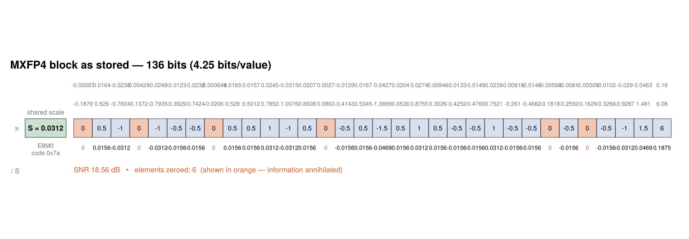
The outlier claims the top of the E2M1 range and, because it alone determines $S$, the other 31 values are left using only the bottom of the grid — several fall below the dead zone and quantize to zero. Outlier quarantine made visible, and precisely the argument for keeping blocks small.
plot_format_snr(randn(MersenneTwister(1), 60_000))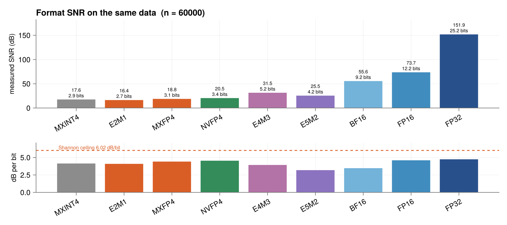
plot_dot_snr_vs_length(trials = 6)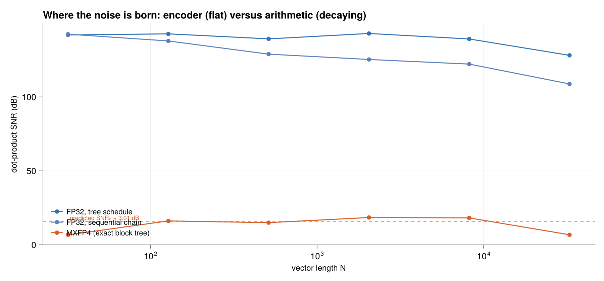
plot_block_size_sweep(n = 40_000)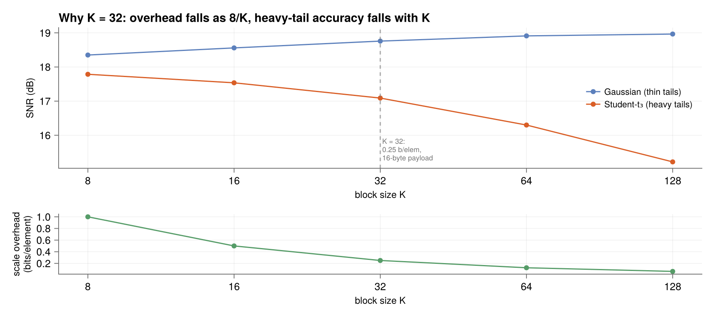
plot_outlier_law(trials = 80)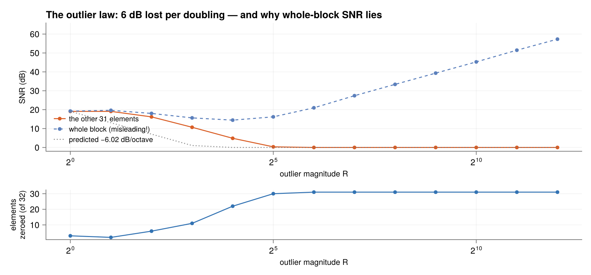
xpuFP.plot_mx_block_layout — Function
plot_mx_block_layout(qb::QuantizedBlock; size=(950,330)) -> FigureAn MX block as stored, with the quantization made explicit cell by cell: the real value, divided by the shared scale, rounded onto the element grid, and only then the stored code — alongside the one scale byte.
Multiplying or dividing by S is an exponent add, never a real multiplication.
xpuFP.plot_format_snr — Function
plot_format_snr(x = randn(MersenneTwister(1), 200_000); formats=..., size=(900,400)) -> FigureMeasured SNR and effective bits for a set of formats on the same data.
The effective-bits axis is the calibration proof of the whole metric: dividing by 6.02 recovers exactly the significand widths of the IEEE formats, and the block formats' fractional readings are honest measurements of how much resolution their four stored bits actually deliver.
xpuFP.plot_dot_snr_vs_length — Function
plot_dot_snr_vs_length(; ...) -> FigureThe central duality, measured: dot-product SNR against vector length.
MXFP4 is length-invariant — all its noise enters at the encoder and the block arithmetic is exact, so the curve is flat at SNRₑ − 3.01 dB forever. FP32's sequential chain decays as 152.3 − 10log₁₀N, the random walk of per-operation roundings. FP32's tree schedule is nearly flat, ≈152 − 10log₁₀log₂N — the decay belongs to the schedule, not the format.
The two laws would meet only near N ~ 10^13.7: never in practice.
xpuFP.plot_block_size_sweep — Function
plot_block_size_sweep(; ...) -> FigureSNR against block size K for thin- and heavy-tailed data, with the storage overhead 8/K on the second axis.
Three forces pull on K, and 32 is where they balance: overhead falls as 8/K; accuracy pulls the other way but only for realistic data — on Gaussian samples the SNR is nearly flat (the power-of-two scale, not the block size, is the bottleneck), while on heavy-tailed data it degrades steadily, because each block's largest value sets the scale; and hardware wants 32 × 4 = 128 bits, exactly a 16-byte payload.
xpuFP.plot_outlier_law — Function
plot_outlier_law(; ...) -> FigureSpread is MXFP4's true adversary, in both proved and measured form.
Plant one outlier of magnitude R among 31 unit-normal elements: it captures the scale, so the rest of the block is quantized on a grid whose step grows ∝ R while their signal stays fixed — their SNR must fall by 20log₁₀2 ≈ 6 dB per doubling of R, until they cross M/32 and flatline at annihilation.
The same experiment exposes a trap: the whole-block SNR is non-monotone, dipping and then rising, because the well-quantized outlier owns all the energy while most coordinates are literally zero. Energy metrics cannot be trusted under spread.
Cost and hardware
plot_energy_bars()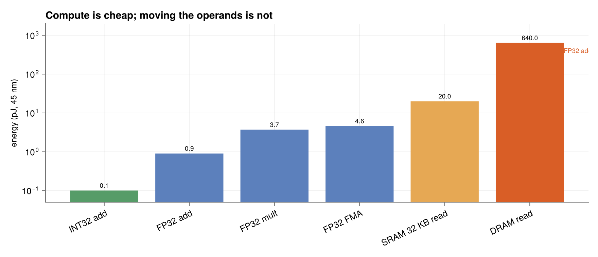
plot_systolic_activity(4, 3, 5)
xpuFP.plot_energy_bars — Function
plot_energy_bars(; size=(880,380)) -> FigureEnergy per 32-bit operation on a 45 nm process (Horowitz, ISSCC 2014; representative values, log scale).
Compute is cheap and flat — add, multiply and FMA span half a decade — while a DRAM access costs ~700× an FP32 add. The bar chart is the roofline model in miniature: any kernel that cannot keep its operands on-chip pays for data motion, not arithmetic.
xpuFP.plot_systolic_activity — Function
plot_systolic_activity(M, K, P; size=(900,380)) -> FigureThe wavefront: each PE's start cycle is its taxicab distance i+j from the corner, so equal start times form diagonals sweeping the array; the activity histogram over T = K+M+P−2 cycles ramps up and back down.
Its area is exactly the MPK required MACs — but a short reduction depth keeps the array under-filled, which is the quantitative case for the long, chained K that MX-block tiling provides.
Redundant arithmetic
xpuFP.plot_csd_digits — Function
plot_csd_digits(x::Integer; size=(900,300)) -> FigureA constant in ordinary binary and in canonical signed digit form, weights in grey and nonzero digits emphasised.
The run-collapsing identity 2ᵏ − 1 turns each block of consecutive ones into two digits; the canonical no-adjacent-nonzeros form is unique and provably minimal in nonzero count, pricing the constant multiplier at fewer adders.
xpuFP.plot_csd_census — Function
plot_csd_census(x::Integer, ndig::Integer; size=(880,340)) -> FigureEvery signed-binary spelling of x that fits in ndig digits, grouped by adder cost.
The landscape shows why the canonical form matters twice over: cost varies wildly for spellings of the very same number, and even the minimum need not be unique — the non-adjacency rule is what breaks the tie canonically.
xpuFP.plot_booth_windows — Function
plot_booth_windows(B::Integer, n::Integer; size=(900,330)) -> FigureRadix-4 Booth recoding drawn as overlapping 3-bit windows sliding across the multiplier.
Each brace shares one bit with its neighbour — the overlap is what makes the recoding correct — and each window emits one digit dⱼ = b₂ⱼ₋₁ + b₂ⱼ − 2b₂ⱼ₊₁. The digits reassemble the two's-complement value exactly, negatives included, with no correction.
xpuFP.plot_rr4_addition — Function
plot_rr4_addition(tr::RR4AddTrace; size=(900,420)) -> FigureOne carry-free addition, column by column, with every transfer drawn as an arrow that hops exactly one position and stops.
The picture makes the timing claim visible as geometry: no wire spans more than one position, every column computes without waiting for any other, and the critical path is three column-local stages whether the adder is four digits wide or four thousand.
xpuFP.plot_absorption_table — Function
plot_absorption_table(; size=(560,420)) -> FigureThe absorption lemma by total enumeration: the final digit w = (s − 4t(s)) + t_in for every one of the 39 possible (column sum, incoming transfer) pairs.
All entries lie in [-3,3] — legal digits, no case needing a second transfer — and the extremes |w| = 3 occur precisely at the rounding ties s ∈ {-6,-2,2,6} combined with an aligned incoming transfer, confirming the half-step bound is tight.
xpuFP.plot_minimal_maps — Function
plot_minimal_maps(; size=(900,760)) -> FigureThe complete minimal-set addition rule as data, on four lookup maps.
(a) the column sum, a 5×5 addition table over the alphabet; (b) the transfer t_{i+1} = f(sᵢ, s_{i-1}), taking only {-1,0,1} — seven of the nine rows are constant (they read only sᵢ), and the two split rows at sᵢ = ±2 are the peek, flipping exactly where the neighbour's sign flips; (c) the interim wᵢ = sᵢ − 4t_{i+1}, everywhere in [-2,2] — claim (i) as a picture; (d) the landing zᵢ = wᵢ + tᵢ, everywhere in [-2,2], with the two combinations the sign-coupling lemma forbids left blank — claim (ii) visible as two missing cells.
xpuFP.plot_dependency_graph — Function
plot_dependency_graph(n::Integer = 5; size=(980,470)) -> FigureThe impossibility of carry-forward in RR4, as a statement about graphs.
Both panels draw the full dependency graph of an addition; an arrow into a node means "argument of".
Left, standard binary: c_{k+1} = maj(x_k, y_k, c_k) has the previous carry among its arguments, so the graph contains the horizontal path c₁ → c₂ → ⋯ by construction. That path is the ripple, and its length is the word width.
Right, minimal RR4: every transfer t_{k+1} = f(s_k, s_{k−1}) has two parents, both in the s row. The transfer row has no internal edges at all, so the dashed, crossed arrows mark edges that would have to exist for a carry to travel two steps — and the rule gives them nothing to be. The longest dependency anywhere is x → s → t → z: three hops at any width.
xpuFP.plot_factor_graph — Function
plot_factor_graph(n::Integer = 4; size=(980,500)) -> FigureThe carry-forward contrast in Forney (normal) factor-graph form, where variables live on edges, constraints are boxes, external variables are half-edges, and dots duplicate a shared variable.
Left: binary addition is a state-space model — one full-adder constraint per column, and the carry variables form a rail threading every box, because each FA has both a c-in and a c-out port. This is the trellis of a system with memory, and any exact evaluation must sweep it end to end.
Right: minimal RR4. Half-edges x_k, y_k enter sum factors σ_k, whose s_k edges branch at dots to the transfer factories f_{k+1} and the combiners g_k. Each t edge fans to two combiners — into g_k as the payment −4t_{k+1} and into g_{k+1} as the receipt — the borrow scheme's conservation pair as wiring.
No factory has a t port on its input side, so no edge can thread two factories in sequence: feedforward, window two, no state variable at all.
xpuFP.plot_butterfly_vs_planes — Function
plot_butterfly_vs_planes(n::Integer = 16; size=(980,430)) -> FigureThe two escapes from the carry chain, side by side.
Left: keep standard binary and compute all carries as a parallel prefix of the associative generate-and-propagate composition. The Kogge–Stone network does this in ⌈log₂n⌉ levels, and its diagonals — strides 1, 2, 4, … — are exactly the wings of a radix-2 FFT butterfly, because prefix networks and butterflies belong to the same graph family. The price is wiring: Θ(n log n) combine edges and long spans. The network organises global dependence; it does not remove it.
Right: change the number system instead. The RR4 window graph has constant depth three at any width, linear wiring, and a bounded light cone of at most three columns per digit. There is no dependence left to organise.
xpuFP.plot_wallace_tree — Function
plot_wallace_tree(rows::AbstractVector{<:Integer}; size=(980,430)) -> FigureThe Wallace tree in both of its native pictures.
Left: the rows enter as vertical wires and the bundle visibly narrows 9→6→4→3→2 — each 3:2 box consumes three input lanes and continues only two. The narrowing is the tree: trace any final wire upward and its ancestry is a ternary tree of boxes with the rows as leaves. The exit CPA at the bottom is the sole carry chain in the whole structure.
Right: the same discipline per weight column as the classic dot diagram — triples of equal-weight dots compress to a sum dot in place plus a carry dot exactly one column leftward, and never further. That is the whole carry-dodging discipline in one sentence.
xpuFP.plot_reduction_pyramids — Function
plot_reduction_pyramids(n::Integer = 24; size=(900,380)) -> FigureWhat Booth/RR4 buys, drawn as the two reduction pyramids: n rows for plain binary (one per bit) against ⌈n/2⌉+1 for Booth (one per bit-pair, plus the unsigned guard).
Operand recoding starts the right-hand funnel lower, which propagates down the whole schedule — fewer constant-time compression levels and about half the full-adder cells — while the carry-save form of every intermediate row is what makes each level O(1) in the first place.
Drawing primitives
Build your own schematic figures with the same visual language.
xpuFP.blank_axis — Function
blank_axis(fig_or_pos; title="", aspect=DataAspect()) -> AxisAn axis with every decoration removed — the canvas for schematic figures (bit layouts, dataflow diagrams, factor graphs) where the coordinates are drawing positions, not data.
xpuFP.bitcell! — Function
bitcell!(ax, x, y, label; fill=LIGHT_GREY, w=1.0, h=1.0, fontsize=11, textcolor=:black)Draw one labelled bit cell with its origin at (x, y) — the building block of every bit-layout figure.
xpuFP.bitrun! — Function
bitrun!(ax, x, y, bits, fill; kwargs...) -> Float64Draw a run of bit cells left to right, returning the x-coordinate just past the run.
xpuFP.brace! — Function
brace!(ax, x0, x1, y, label; below=true, depth=0.28, fontsize=10)A horizontal brace spanning [x0, x1] with a centred label — used to name the sign / exponent / fraction fields under a bit layout.
xpuFP.labelbox! — Function
labelbox!(ax, x, y, w, h, text; fill, strokecolor, fontsize, rounded)A labelled rounded box — the node primitive for dataflow and pipeline diagrams.
xpuFP.arrow! — Function
arrow!(ax, p0, p1; color=GREY, linewidth=1.0, headsize=0.10, dashed=false)A line from p0 to p1 with a filled triangular head at p1. Makie's arrows! scales its heads in data units, which fights schematic layouts; this draws the head as an explicit polygon so it stays the size you asked for.